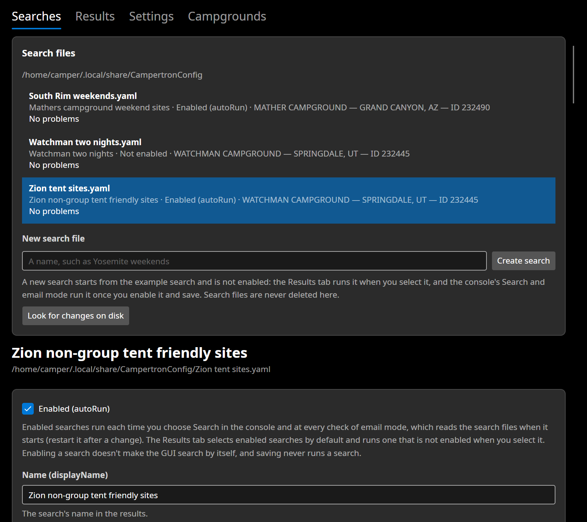
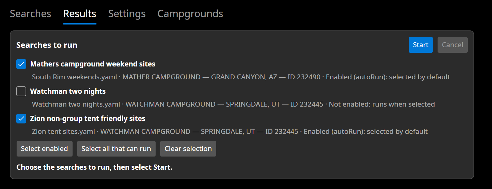
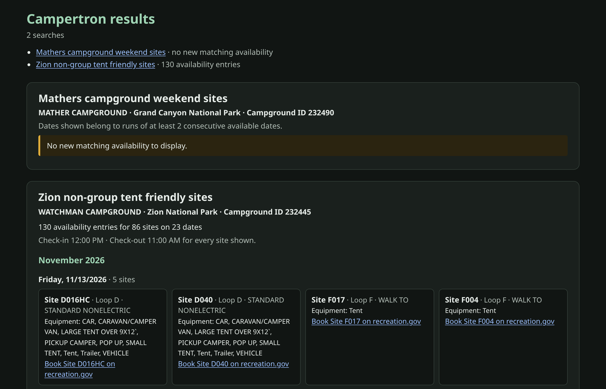
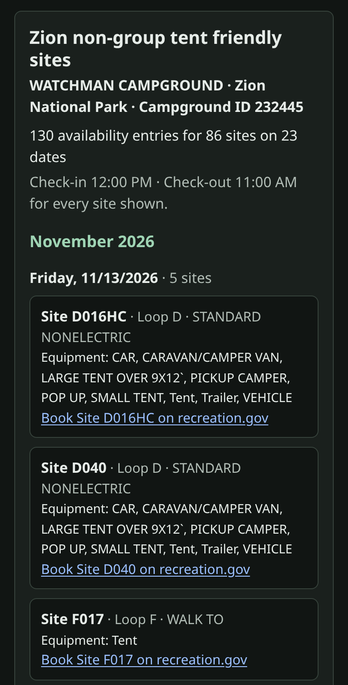

Campertron
Get notified when a campsite opens up on Recreation.gov.
Popular campgrounds are booked months ahead, but people cancel all the time, and those openings are usually gone again within minutes. Campertron checks Recreation.gov for you and tells you when a site opens up at a campground you care about.
Download Campertron See the source code on GitHub
Free and open source. For Windows, macOS and Linux, or as a Docker container.
How it works
- Tell Campertron what you're looking for. Pick the campgrounds and the dates, and anything else that matters to you, such as your group size or a site for your tent.
- Campertron checks Recreation.gov for open sites that match.
- See what it found. Campertron shows you the open sites, or sends them to you by email or as a notification on your phone. Then you book the site on Recreation.gov yourself.
What you can do with it
Set it all up in the desktop app
Look up any campground's ID, phone number, description, directions and fees. Create and edit your searches and settings, run your searches and see the open sites they found.
Find the right site
Search one campground or many at once. Narrow the results by dates, days of the week, group size, equipment such as a tent or a trailer, site features such as shade, site types, specific sites, and a minimum number of nights in a row.
Keep watching around the clock
In email or ntfy mode, Campertron keeps running, waits a minute between checks and tells you whenever it finds openings it hasn't reported before.
Get notified by email or on your phone
Get the open sites in an email, or as a push notification on your phone with ntfy.
Use a terminal or your browser
The console shows the open sites in a terminal window, or as a web page in your browser that follows your light or dark theme and fits a phone screen.
Run it on a server
The console also comes as a Docker container image for 64-bit Intel or AMD and ARM systems, so a home server can keep watching for you.
Screenshots
The screenshots show the dark theme; the desktop app and the results page also have a light one.






Download
Desktop app and console
Open the latest release on GitHub, download the archive for your computer and extract it. Then start CampertronGUI, the desktop app, or CampertronConsole from that folder. You don't need to install anything else.
There are downloads for Windows, macOS and Linux, for Intel or AMD and for ARM processors. Which file do I need?
The programs aren't code-signed, so your computer may warn you the first time you start one. If your computer blocks the program explains what to do.
Docker
The console is also a container image for servers and home labs:
docker pull ghcr.io/shaunanthonyhathaway/campertronconsole:latestRun it with Docker shows how to set it up with your settings.
Set up your searches
The guide on GitHub explains how to set up your searches, choose where the results go, and get email or ntfy notifications.
Help and source code
- Read the guide: how to install, set up and use Campertron.
- Ask a question or report a problem on GitHub.
- See the source code on GitHub.
- MIT License: Campertron is free to use, change and share.
Please don't post your settings files, passwords or tokens when you ask for help. Questions and problems lists the details that help.